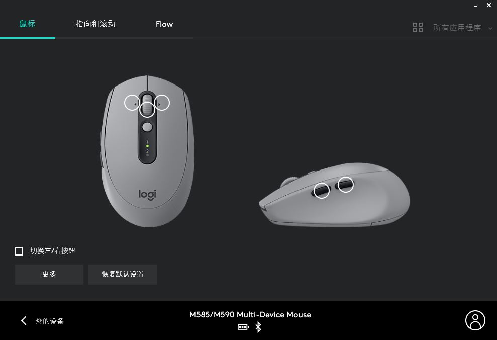
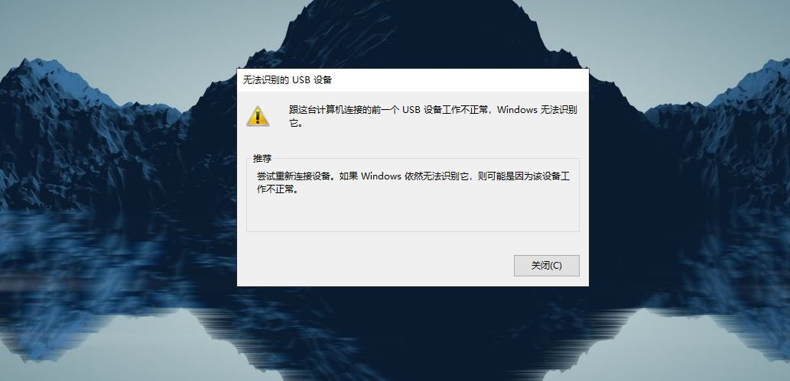
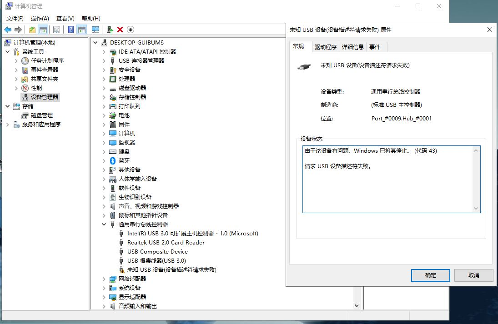
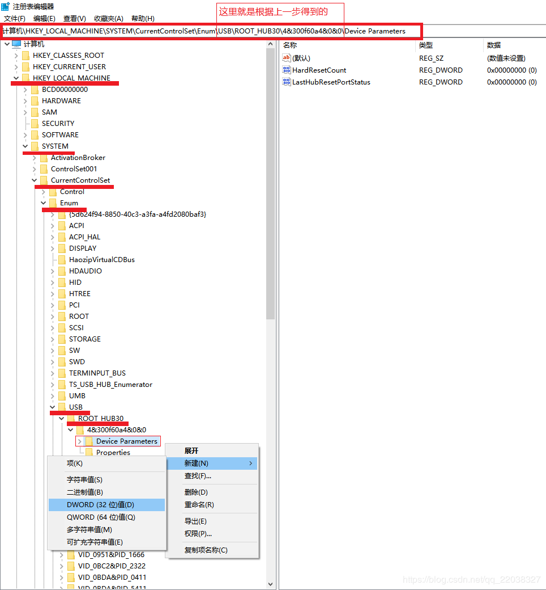
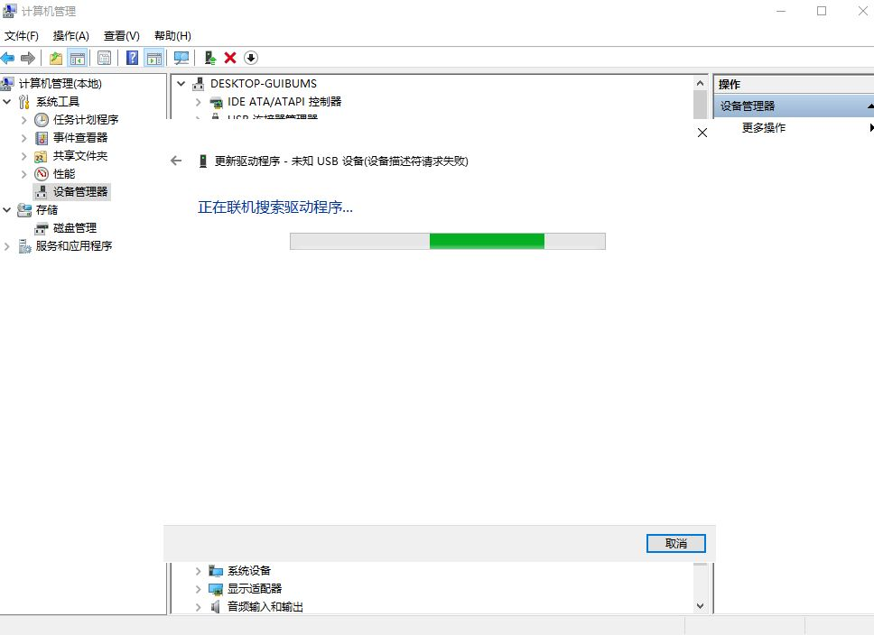
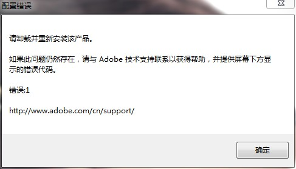
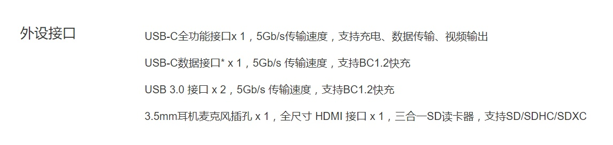

什么是环境变量？
用户变量
当前用户可以对其进行添加、修改或删除
系统变量
只有管理员才能添加、修改或删除，由windows定义并应用到所有系统用户
重要系统变量介绍
- NUMBER_OF_PROCESSORS变量：代表用户电脑中逻辑处理器的数量
- OS变量：表面用户的操作系统
- Path变量：规定操作系统在指定的文件路径中查看可执行文件
环境变量的应用实例
索引文件夹
在用户环境变量中，随意设置一个变量名，然后把路径指定到你的文件夹中或者某个文件（exe)中，接着在运行中（win+r)中输入%变量名%,便可以直接进入文件夹中或者运行该程序
打开应用
在用户环境变量Path中添加应用的目录即可
总结
- 在用户环境变量Path下添加后，均可在win+r中输入程序名，打开程序
- 如果新添加环境变量（非Path），则需要输入%变量名%才能打开程序
参考： https://zhuanlan.zhihu.com/p/67726501
鼠标接收器出现问题？
这是我目前用的鼠标罗技M590，昨天晚上还能用，今天打开笔记本电脑发现鼠标不能用了，于是把USB接收器拔下来重新插入后，发现出现下面的提示



尝试的方法有：
1.重启电脑
2.
3.更新驱动

都失败了，然后我觉得应该是接收器出了问题，于是我找了一个也用罗技鼠标的朋友，用了他的接收器发现顺利连接上了，然后从网上单独购买了一个优联接收器。
Adobe Acrobat DC
打开Adobe Acrobat提示：未找到IMSLib。Acrobat服务将无法正常工作
在网上找到IMSLib.dll文件下载
复制文件到路径：C:\Program Files (x86)\Common Files\Adobe\OOBE\PDApp\P7
如果没有相关文件夹，可以手动创建。
https://pan.baidu.com/s/1otyL7Co7O1SfKLyXU7Xctg
提取码：isht
photoshop

下载PSCS6绿化.exe 绿化即可解决
https://pan.baidu.com/s/1SdUjeuPetjtnaPJARmYwVg
提取码：x8i3
现在对于Adobe系列产品，下面网站提供了详细的安装方式和安装包
IP
IP地址分为公网IP和私网IP
我们用笔记本电脑在网上查询的IP地址都是公网IP地址，然后用ipconfig查询的地址发现与网上查询的地址不同，说明我们用的都是公网IP分配的私网IP。
举例说明：
1.家里使用的路由器
我们家里连接同一个路由器（局域网）的不同设备，都被分配了一个私网IP地址，各不相同，但是在外网看来我们都是同一个IP地址（公网IP，运营商每次分配给我们的公网IP是不一样的，都是从IP池里随机取的。可以重启路由器观察一下，每当你重启一次路由器之后，公网IP就会切换。这里说明：有线网都是采用公网IP），默认私网IP地址是动态的，但是可以自己设置成静态。
下面两小节部分是引用
动态域名解析
这就需要动态域名解析来解决。简单来说就是将这些公网IP映射到一个域名上，无论IP怎么切换，我们只要通过这个域名就能得到IP，并进行访问，至于域名和动态IP怎么映射，我们不必关心，只要记住这个域名就好了。
TP-LINK本身有自己动态域名解析服务，还支持花生壳的动态域名解析服务。在路由器应用管理->DDNS 界面可以选择动态域名解析服务提供方，以及免费域名。我这里就选择了TP-LINK的域名解析服务，简单快捷。
填写好域名信息并保存之后，打开控制台，ping一下这个域名。如果ping返回的响应结果ip地址就是我们的公网IP，那么动态域名配置成功。
这时可以在家里搭建一套服务器，若服务器是用WiFi上网，在同一个局域网（公网）中，可以连接服务器的私网IP（设置成静态）可以进入服务器。若服务器是插网线的（公网IP，和运营商联系设置成静态），那就连接服务器的公网IP，这时就可以不在同一个局域网了。
端口映射
试想一下，连接到路由器上的设备往往不止一个，有电脑，平板，手机…路由器会为每个设备分配一个私有地址，而这些设备共享一个公网IP，大家轮换使用(NAT映射)。那么，我们要从外网访问家里的主机时，只有公网IP，如何在这众多的设备中选择出我们的主机呢？
如果路由器采用DHCP的方式为局域网内的设备分配私有IP，那么这个IP往往是有时效性的，这一次你的主机是192.168.1.105，说不定过一会就自动切换到其他IP了。这样的话对我们的端口映射会有影响。可以修改路由器设置，为局域网主机分配固定的私有IP地址。
端口映射解决了这个问题。先看看怎么配置端口映射。在应用管理->虚拟服务器 中添加一行映射。外部端口（真实端口映射）是在外网访问我们局域网主机提供的服务时指定的端口，内部端口是局域网主机提供服务的真实端口。
通过域名+端口（外部端口）可以访问到自己主机提供的这个服务。
2.手机使用的移动网络
我们在网上查询IP地址是运营商提供的公网IP，但是手机被分配的是私网IP。
3.在学校使用局域网
我们在学校连接的校园网WiFi，在网上查询IP地址是教育商提供的公网IP，电脑ipconfig查询显示被分配的私网IP，但是办公室里插网线的电脑都是公网IP，ipconfig和网上查的ip地址一致，但是如果想做静态须向学校申请。
可以在办公室把公网IP设置成静态，把电脑做成服务器，然后在校外连接自己电脑（中转服务器），再访问学校的某个地址（私网IP），下载文献，访问信息门户。本质与VPN原理相同。
4.Google插件VPN翻墙
境内访问境外的中转服务器，然后服务器（公网IP）再访问其中的某个地址（私网IP）分配给你。
路由器、猫、网络带宽、NAS
家用网络带宽
一般是100Mbps，换算为12.5MB/s.
猫、路由器
modem光调制解调器
光纤-猫（实现光通信）接到路由器wan端口，再由路由器的Lan端口接到其他终端，比如NAS，台式机等等。
路由器
千兆路由器模糊概念：
1.wan端口是1Gbps
2.lan端口是1Gbps
3.支持802.11ac的1000Mbps无线
市面上现在都是双频路由器，就是有2.4G和5G两个频段WiFi信号路由器，2.4G频段单根天线带宽是150Mbps，5G频段单根天线带宽433Mbps，如果是2根2.4G天线和2根5G（穿墙效果差）天线，WiFi传输带宽就可以达到1166Mbps。但是如果不使用局域网操作，直接在网上下载的速率肯定达不到125Mb/s，因为家用带宽100Mbps~12.5Mb/s，好处是
1.可以适当减小信号的衰减。
2.搭建NAS，在局域网中设备之间用WiFi传输文件，速率可以达到125Mb/s。
一般路由器端口wan端口是100Mbps，因为家用带宽就是100Mbps，上网下载速度最大只能12.5Mb/s。但是Lan端口就不同，如果是1Gbps，使用NAS（私有云），通过Lan端口连接NAS和台式机，两个设备在局域网下，设备之间传输文件的速率可以达到125Mb/s，和你办的带宽没有关系。如果路由器没有千兆Lan端口的话，可以考虑加一个交换机，光纤-猫-交换机（千兆端口）-路由器/NAS（群晖设备有两个Lan端口）或者就是上面说的换一个千兆WiFi路由器解决。
传输协议和接口
USB协议和雷电协议
USB2.0 60Mb/s
USB3.1 Gen1 俗称的USB3.0 640Mb/s 供电不足100W
USB3.1 Gen2 1280Mb/s 供电可达100W
USB3.2 2560Mb/s
雷电3协议支持USB所有协议 5G/s
TypeA接口支持USB3.1 Gen1和USB2.0协议
TypeC接口支持USB2.0，USB3.1 Gen1和USB3.1 Gen2协议。如果有闪电标志即支持雷电3协议。
举例：

两个接口的传输速率都是640Mb/s，应该都是支持USB3.1 Gen1协议，小米充电器一般都是45W/65W，未达到100W。
第二个TypeC接口无法连接电源，不支持转接 DP, HDMI,VGA 等等接口输出视频，也就是说并不能用来连接外接显示器。但是TypeA接口的USB3.0协议可以转接视频输出。说明小米笔记本pro的第二个TypeC接口是阉割版的。
目前手机上的TypeC接口支持的是USB2.0协议。
Windows 使用ssh secure file transfer上传文件到linux服务器
填写Host Name（你的服务器地址或域名），User Name（你的服务器用户名，注意你SSH使用root用户是否有权限登陆，或使用其他用户登陆），Port（你SSH登陆的端口，默认为22）。